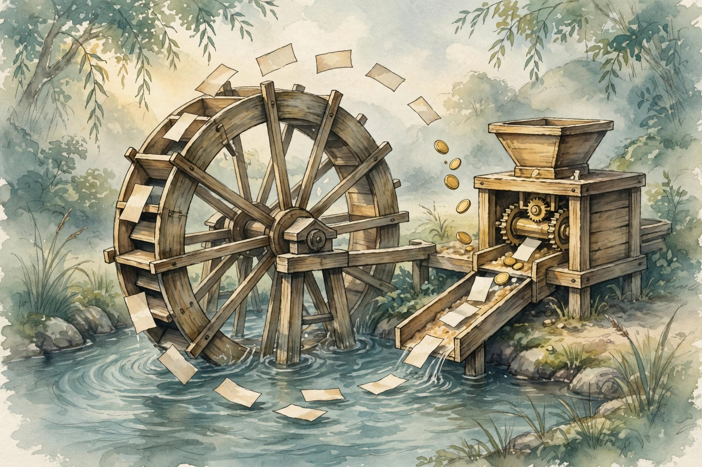

U04 built the machine. U05 tunes it and feeds it: prompt optimizers, the three improvement knobs, LoRA, distillation, DPO, agent data kinds, synthetic data, data flywheels, informative examples, contamination control, validator calibration, and tiny benchmarks. This companion narrates the lesson content concept by concept.
Source fact A claim or number taken from the lesson file content/v2/cs329z/lessons/u05_lesson.md. Each chart carries its lesson section.
Illustration A toy, picture, or simulation built for this page. It runs the lesson rule on tiny fixed inputs. It is not a lesson measurement.
Companion note My own synthesis. It joins lesson facts into advice. The lesson does not state it directly.
C01…C12 Concept numbers from the lesson.
Sourcing. No full lecture transcript exists for these sessions. Every concept maps to a schedule title (S09, S11, S12) at title level only, and the lesson states that no paper was inspected for C01. This page narrates the lesson content, not a lecture recording.
Source fact Hand-tuning a prompt is slow. The optimizer loop: propose candidates, score them, read the failing traces, write feedback, edit, rescore. Toy: 4 candidates on 20 examples score 0.55, 0.62, 0.70, 0.78. The loop reads the worst traces of prompt 1, writes "answers miss the units", edits, and rescores at 0.66. Search cost: 4 × 20 = 80 scored calls. Hand-written baseline 0.62. Gain 0.16. Standard error per candidate: 0.10 C01 contracts 2, 6.
The "gradient" here is text: a sentence of feedback about the failures, not a vector. The 0.70 vs 0.78 gap sits inside the noise of 0.10. Trust only gaps larger than about 2 standard errors C01 contracts 3, 9.
Break the diagnosis assumption: the feedback blames length when the fault is format. The edit optimizes the wrong thing and scores fall C01 contract 11.
The loop reads failures, writes one sentence about them, and edits. Text does the work of a gradient.
Source fact Accuracy sits at 0.72 and the bar is 0.80. Three knobs: rewrite the prompt (2 hours of work), fine-tune the small model (50 GPU-hours), switch to the big model (3x inference cost forever). Toy results: prompt rewrite 0.79, fine-tuning 0.83, big model 0.86. Decision: fine-tune clears the bar with no per-query tax. If the bar were 0.78, the prompt rewrite would win C02 contracts 2, 6.
The mechanism is marginal analysis: buy the cheapest accuracy first. Per-query cost compounds over the product lifetime. One-time cost does not. A knob that costs 3x per query must beat the bar by a margin worth paying forever C02 contract 5.
The prompt rewrite costs 2 hours once. The big model costs 3x on every query until the product dies.
Source fact A 1024×1024 weight matrix holds 1,048,576 numbers. Full fine-tuning changes all of them. The LoRA bet: the useful change is low rank. the new W equals W + B A, with B 1024x8 and A 8x1024. Trainable numbers: 16,384. Ratio: 64x fewer. The choice is between "train all" and "train 16,384" C03 contracts 2, 6.
The justification for freezing W: the base model already knows language. The task needs a small steering change. QLoRA adds 4-bit storage of W: on 7B parameters, fp16 base 14 GB becomes a 4-bit base of 3.5 GB, and the adapter absorbs the quantization noise C03 contract 5.
Sixty-four times fewer numbers, if the task change is low rank.
Source fact The big model scores 0.90 but costs 10x per query. The small model scores 0.75. Toy: 1000 teacher-labeled examples. Student on teacher labels: 0.85. Student on 200 gold labels: 0.75. Labels from the teacher beat scarce gold by 0.10. Labeling cost: 1000 teacher calls, paid once C04 contracts 2, 6.
The student learns more than labels from the teacher. A hard label says A. A soft target says "A 0.7, B 0.25, C 0.05", which teaches the boundary between A and B C04 contract 5.
Teacher quality bounds the student: a random teacher at 0.25 accuracy gives a student near 0.25 C04 contract 8.
One thousand teacher calls buy a cheap model forever. The 10x per-query tax dies with the teacher.
Source fact One thousand pairs (x, y_w, y_l). No reward model, no RL. Toy with beta = 0.1. Pair 1: model margin 0.5, reference margin 0.1, m = 0.4, loss = 0.673. Pair 2: the model prefers l (margin -0.5), m = -0.6, loss = 0.724. The worse pair costs more. The loss pushes the model toward w C05 contracts 2, 6.
The sanity checks: when the model equals the reference, m = 0 and loss = log 2 = 0.693. A pair with a huge positive m has loss near 0. Swapping w and l raises the loss C05 contract 8.
No reward model to train, no RL to stabilize. The pairs are the objective.
Source fact Three data kinds, three prices. Traces (automatic logs of real runs): $0.01 each, noisy. Demos (a human performs the task): $2 each, clean. Feedback (thumbs up/down on runs): $0.10 each, weak signal. One thousand traces cost $10. One thousand demos cost $2000 C06 contract 2.
Toy with budget $100. All demos: 50 demos. All traces: 10,000 traces. Mix: 25 demos ($50) plus 5000 traces ($50). The mix buys clean targets and broad coverage. All feedback: 1000 items C06 contract 6.
Demos are clean and dear. Traces are noisy and cheap. The mix buys both.
Source fact Toy: 1000 generated examples, verifier accuracy 0.85, acceptance 0.85. Expected good labels: 850 × 0.85 = 722. The generation-verification loop is the whole method: generate cheaply, verify strictly C07 contract 6.
The collapse risk: variance of a feature across generations goes 1.00, 0.76, 0.56. The tails shrink each round. Train on your own outputs unchecked and the distribution narrows until the model forgets the edges C07 contract 6.
Generation is cheap. Verification is the method. Skip it and the tails die.
Source fact Toy: u = 1000 users, f = 0.10 fraction contributing, c = $2 per trace. Daily yield: 100 traces at $200. Weekly: 700 traces at $1400. A month of flywheel: 3000 traces. Compare: 3000 demos at $2 each would cost $6000 with no product attached. The product pays for its own training data C08 contract 6.

Every product interaction is a potential training trace. The flywheel just has to catch it.
Source fact The annotation budget covers 100 of 10,000 traces. Toy: random 100 teach the model what it already knows (gain 0.02). The 100 with the highest model uncertainty teach the boundary (gain 0.08). Uncertainty sampling beats random by 0.06. Duplicate filter first: 2000 of the 10,000 are near-duplicates. Filtering saves 20 percent of any budget C09 contracts 2, 6.
An example is worth annotating when the model is unsure about it.
Source fact The eval set leaked into training. Toy: 200 eval docs, 12 share a 13-gram with training. Leakage rate 6 percent. The model scores 0.88 on leaked items and 0.74 on clean ones. Reported mean: 0.06 × 0.88 + 0.94 × 0.74 = 0.748. True ability near 0.74. Inflation 0.008 on this toy, worse when the leak is larger C10 contracts 2, 6.
The detection method: a 13-gram scan between eval and train. A clean eval shows zero leakage C10 contract 8.
Six percent leakage bought 0.008 of phantom score. The reported number is not the true number.
Source fact The optimizer from C01 maximizes the validator score. What if the validator is wrong? Toy: 10 items. Validator scores average 0.65. Human labels average 0.50. Gap 0.15. Accuracy at threshold 0.5: 0.60. The validator is optimistic and mediocre C11 contracts 2, 6.
The failure: the validator score climbs from 0.65 to 0.90 while human-judged quality stays flat. The metric becomes the goal, then stops measuring anything C11 contract 11.
Every optimizer in this unit follows the validator. An uncalibrated validator is a broken compass.
Source fact The team optimizes daily. Three tiers: dev (1000 items, touch freely), held-out test (200 items, score weekly), sealed (200 items, score once at the end). Toy: true ability 0.74. Dev-tuned model scores 0.81 on dev, 0.75 on the weekly test, 0.74 on the vault. Two peeks at the vault with tuning between: 0.78. The peeks bought 0.04 of phantom gain C12 contracts 2, 6.
The rule: the 200 vault items cannot train. A "just looks" debug peek is still a peek: it spends information and the phantom gain appears C12 contracts 9, 14.
Two peeks bought 0.04 of nothing. The vault is honest only while sealed.
| # | Concept | Transferable principle |
|---|---|---|
| 01 | Prompt optimizers | Pay the search cost once at compile time. Then hold out fresh data and check the winner there. |
| 02 | Three knobs | Order the knobs by cost type. Climb only as far as the bar demands. |
| 03 | LoRA | Start with rank 8. Raise it only when the eval says the adapter is the bottleneck. |
| 04 | Distillation | Distill when the cost cut matters more than the last points of accuracy. |
| 05 | DPO | Use DPO when you have pairs and one GPU. Watch for verbosity learning. |
| 06 | Data kinds | Price each data kind per unit of signal, not per item. Then mix. |
| 07 | Synthetic data | Keep real data in the mix every round. Track feature variance. |
| 08 | Flywheels | Build the trace collector before the model needs it. The data compounds. |
| 09 | Informative data | Filter duplicates first, then rank by uncertainty. |
| 10 | Contamination | Scan every new eval with n-gram overlap before trusting a single score. |
| 11 | Validators | Calibrate first, optimize second. A stale validator rots silently. |
| 12 | Tiny benchmarks | Log every vault access. Refresh the vault when the task drifts. |
Companion note The lesson plates u05_f01 through u05_f06 (before/after pairs from the original toys) sit behind this page's figures: f01 the optimizer loop, f02 the LoRA factorization, f03 the teacher-student gap, f04 the flywheel, f05 the contamination scan, f06 the three-tier split. Each chart above re-plots the same lesson numbers with its section citation.